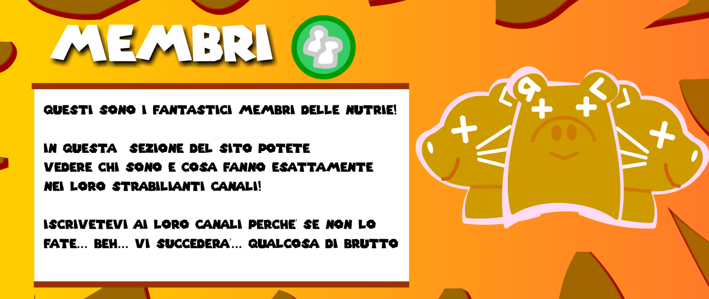
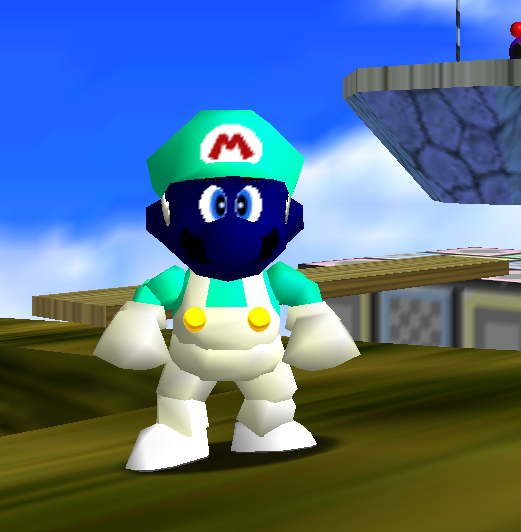
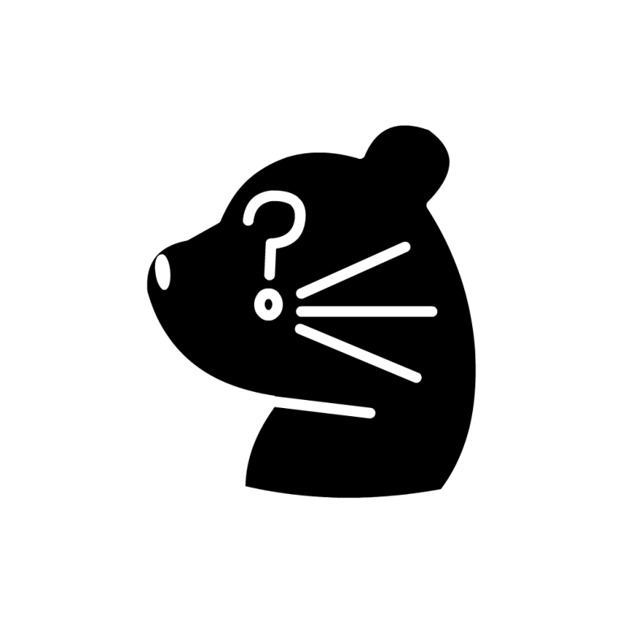

Tulipane AKA Retropad64
Tulipane aka Retropad64, Conosciuto come il Nutrione, Tulipane è il membro più giovane delle nutrie, è un aspirante informatico, ha due c anali youtube i qualli sono Retropad64 e Tulipane1 dove fa informatica e bloopers. Tulipane propose ai gli altri membri delle nutrie l'idea del canale youtube delle nutrie!
Eugy

Eugy, il membro più vecchio delle nutrie, possiede il canale di Eu-tube e Eu-dub dove fa meravigliose animazioni e fandub, è anche editor e il grafico delle nutrie e de stato colui che venne insultato da Tulipano da dove è nato il meme delle nutrie.
Tulipano AKA Darwin

Tulipano aka Darwin! come ci possiamo scordare di lui! conosciuto come la terza nutria, ideatore del meme delle nutrie quando insulto Eugy u sando la parola Nutria, tristemente non ha un canale youtube ma è un aspirante doppiatore e de un fandubber
Gli intrusoni
